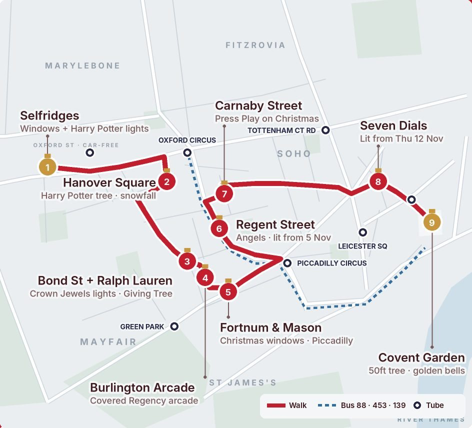
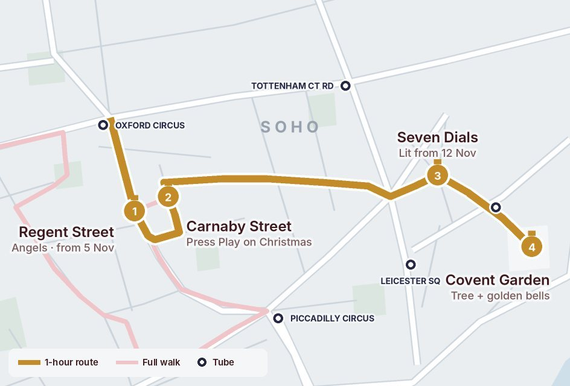
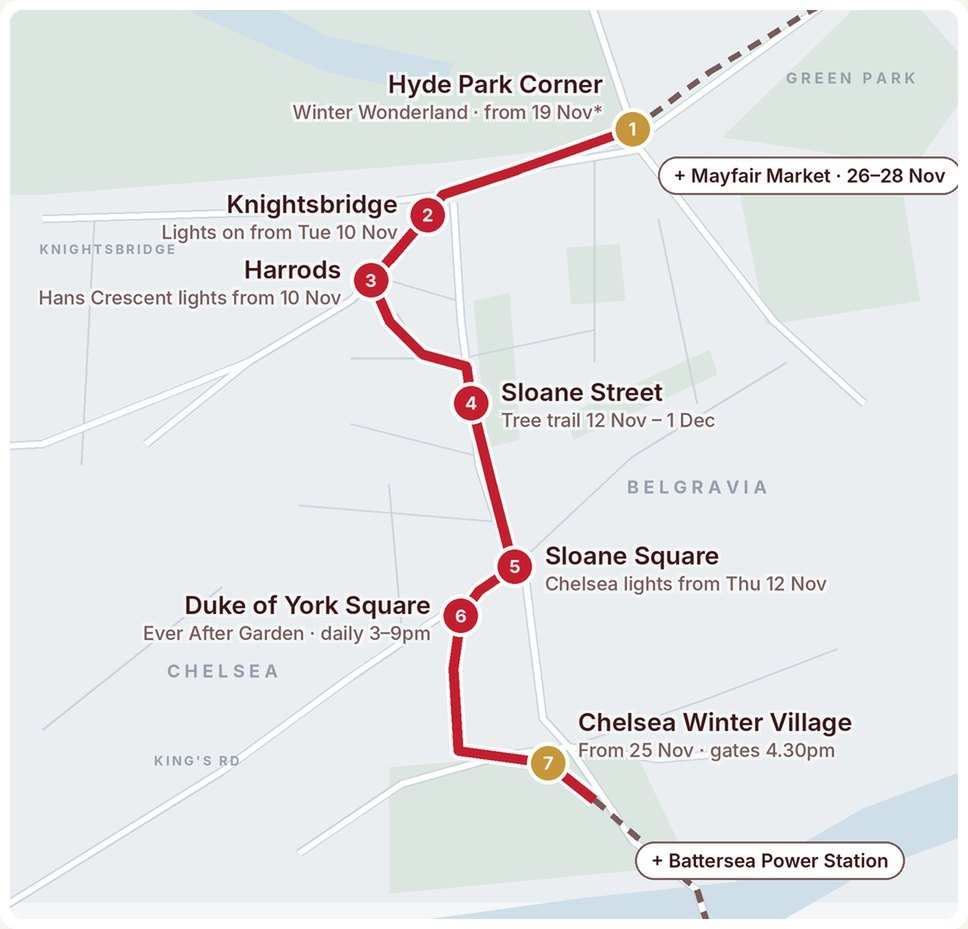

LIGHTS WALKSLondon at Christmas
Two walks I planned this year: the classic West End route with every big display, and a calmer one through Knightsbridge and Chelsea. Both free, with the nearest tube at every stop and the buses worth riding.
Facts checked 10 Nov 2026
The West End lights walk
Selfridges → Mayfair → Regent St → Covent GardenThe Christmas route I planned this year: the big West End lights in one evening, from Selfridges' windows through Mayfair's prettiest corners to the golden bells in Covent Garden, with the nearest tube at every stop and the buses worth riding.

Any weekday from Fri 13 Nov, starting 3.30–4pm
Bond Street and Covent Garden switch on the evening of Thu 12 Nov, so from the 13th everything on the route is lit for the whole walk. Weekdays are calmer than Fridays and Saturdays. The lights are free; food, shopping and tickets are not.Stop by stop
- 1
Selfridges + Oxford Street
Windows unveiled 22 Oct · lights on from 9 NovSelfridges' Christmas And The City windows, then Oxford Street's lights: classic stars plus four giant Hogwarts house lights, each with floating candles.
Tip: Oxford Street has been car-free between Orchard Street and Great Portland Street since 26 Oct, so walk down the middle. No buses run on it.
- 2
Hanover Square
Harry Potter Christmas treeA Harry Potter-themed tree with an enchanted snowfall show, just south of Oxford Street.
Tip: The snow show is listed as hourly, so arrive just before the hour.
- 3
New Bond Street + Ralph Lauren
Lights on Thu 12 Nov, 7pmCrown Jewels-inspired lights (tiaras, pearl necklaces, the Imperial State Crown), in this design's final year. At the bottom, Ralph Lauren's five-metre Giving Tree at 1 New Bond Street: donate to The Royal Marsden to dedicate a star.
Tip: Take Brook Street west from Hanover Square to join Bond Street.
- 4
Burlington Arcade
Covered Regency arcadeA short cut from Burlington Gardens down to Piccadilly, and one of the prettiest walk-throughs in Mayfair.
Tip: It's a shopping arcade with closing times, so do this part early in the evening. If it's shut, walk down Old Bond Street instead.
- 5
Fortnum & Mason
Christmas windows on PiccadillyFortnum's flagship on Piccadilly, dressed for Christmas.
Tip: Then walk east along Piccadilly to Piccadilly Circus.
- 6
Regent Street
Angels lit from Thu 5 NovThe Spirits of Christmas angels, back for their 10th year.
Tip: Walk up from Piccadilly Circus for the classic view of the angels curving away. Hamleys' windows are on the way.
- 7
Carnaby Street
Lights on from Wed 4 NovThis year's theme is Press Play on Christmas, inspired by 90s nostalgia.
Tip: Liberty is one minute north on Great Marlborough Street. Its Christmas windows are worth the detour.
- 8
Seven Dials
Lit from Thu 12 NovPart of the Covent Garden display, which covers the Piazza, Seven Dials and Neal's Yard.
Tip: Walk through Soho to get here (about 12 minutes), then peek into Neal's Yard round the corner.
- 9
Covent Garden
Lights on Thu 12 Nov · market to 2 JanA 50ft Norwegian spruce, 40 giant golden bells, mirror balls and baubles, plus a new Forest of Theatre: trees inspired by West End shows.
Tip: From 4 to 31 Dec, snow falls on the Piazza every hour from midday to 9pm. Time your finish for it.
Short on time? The 1-hour version

- Start: Oxford Circus tube (Bakerloo, Central, Victoria).
- 1 · Regent Street: walk south under the angels as far as Beak Street.
- 2 · Carnaby Street: turn left onto Beak Street, then up Carnaby for Press Play on Christmas.
- 3 · Seven Dials: cut east through Soho on Broadwick Street (about 12 minutes).
- 4 · Covent Garden: finish at the tree and golden bells. Covent Garden tube is two minutes away.
It keeps the four biggest displays and skips the Mayfair detours. Seven Dials and Covent Garden light up from 12 Nov; Regent Street and Carnaby are already lit.
Getting around
- 88 or 453 run the full length of Regent Street: the easiest way to see the angels from above.
- 139 runs from Piccadilly Circus via Haymarket, Trafalgar Square and the Strand. Get off at Southampton Street for Covent Garden.
- No buses on Oxford Street since it went car-free. Routes 98, 139 and 390 now go via Wigmore Street, and the 7 and 94 stop at Marble Arch.
Bus routes can change. Check TfL Go before you travel.
- Bond Street · Oxford Circus · Green Park · Piccadilly Circus · Tottenham Court Road · Leicester Square · Covent Garden
- From Covent Garden, Leicester Square's star lights and St Martin's Lane's theatre-inspired trees are 5–10 minutes away.
The other lights walk
Hyde Park → Knightsbridge → ChelseaEveryone squeezes down Oxford Street. This route takes you past Knightsbridge, Sloane Street and King's Road instead, ending at a winter village in the Royal Hospital grounds. Calmer streets, the same Christmas sparkle.

Thu 26 – Sat 28 Nov, after 4pm
Every stop is lit, the Winter Village is open, Sloane Street's tree trail is still up, and the Mayfair Christmas Market is on near the start. Any weekday up to Tue 1 Dec works too. It's dark by about 4pm.Stop by stop
-
1
Hyde Park Corner
Winter Wonderland: 19 Nov – 3 JanThe walk starts beside Hyde Park's Winter Wonderland, with its Luminarie Lane light market and a canopy of lights over the ice rink.
Tip: Entry needs a pre-booked arrival slot, even for off-peak. Blue Gate is about 5 min from the Tube. If you're only here for the walk, take in the glow from outside and keep going.
-
2
Knightsbridge
Lights on from Tue 10 NovAn eco design along Brompton Road made with recycled plastic bottles, with hidden horse details.
Tip: The horses nod to the Household Cavalry barracks just across the road in Hyde Park.
-
3
Harrods & Hans Crescent
Hans Crescent lights from 10 NovThe Knightsbridge lights continue round the side of Harrods on Hans Crescent.
Tip: Look at the front windows, then cut round Hans Crescent towards Sloane Street. It's far quieter than Brompton Road.
-
4
Sloane Street
Firefly Festive Forest: 12 Nov – 1 DecA trail of Christmas trees lines the street. Sloane Street's Christmas Celebration runs Sat 14 Nov, 1–7pm, and Harvey Nichols unveils its festive display on 20 Nov.
Tip: The tree trail ends on 1 Dec, so go before then if you want it in your photos.
-
5
Sloane Square
Chelsea lights from Thu 12 NovChelsea's lights cover Sloane Square, Sloane Street and King's Road.
Tip: You're halfway. Sloane Square Tube is right here if the weather turns.
-
6
Duke of York Square & King's Road
Ever After Garden: 5 Nov – 21 Dec, daily 3–9pmA field of illuminated white roses fills the square, raising money for The Royal Marsden Cancer Charity. The square's tree lighting is Thu 12 Nov, 5–7.30pm, and King's Road has sparkling crowns overhead.
Tip: Free to wander. You can dedicate a rose to someone for a suggested £15 donation.
-
7
Chelsea Winter Village
25 Nov – 28 Dec · gates 4.30pmThe finale, in the grounds of the Royal Hospital Chelsea. Go in at London Gate on Royal Hospital Road. The village food court is free; the Chelsea Winter Illuminations trail through Ranelagh Gardens is ticketed.
Tip: Trail tickets run from £19 (super off-peak, usually later slots from about 8pm) up to £30.95 at peak. The trail closes at 10pm and the village at 11pm.
Make more of it
Mayfair Christmas Market
At Mayfair Place, 11am–9pm, about 3–5 min from Green Park Tube. From there it's a walk along Piccadilly to Hyde Park Corner to start the route.
Listed as free entry in published guides; the organiser's page doesn't state it, so check before you go.
Battersea Power Station
Walk down to Chelsea Bridge and cross to the power station for the Glide ice rink (6 Nov – 3 Jan) and its Christmas decorations, including a 40ft tree. Allow roughly 15–20 min on foot. Battersea Power Station Tube (Northern line) gets you home.
This is Battersea Power Station, not Battersea Park. The park hosts the fireworks.
Getting around
- 9, 52 or 452 stop at Knightsbridge station; 14, 74 or C1 run along Brompton Road past Harrods.
- 19, 22, 137 or 452 run down Sloane Street towards Sloane Square.
- C1 stops at Sloane Square.
Bus routes can change. Check TfL Go before you travel.
- Hyde Park Corner · Knightsbridge (both Piccadilly) · Sloane Square (District, Circle)
Backup route
Markets by the river · Waterloo → London Bridge
- Southbank Centre Winter Market: 2 Nov – 4 Jan, 11am–10pm, closed 25 and 31 Dec. 3–5 min from Waterloo.
- Follow the river east past Tate Modern (about 20–25 min), on to Borough Market (about 9 min).
- Finish at Winter by the River, London Bridge City: 10 Nov – 3 Jan. About 8–10 min.
About 45–55 min of walking, plus market time. Ends at London Bridge Tube and rail.
Good to know
- Light displays are free to see. Winter Wonderland entry and the Chelsea Winter Illuminations trail are ticketed.
- Some venues close on Christmas Day. Check the organiser before you travel.
- Times, prices and bus routes can change. Every fact here was checked against the sources below on 10 Nov 2026.
- Where sources disagreed, we went with the official one: the Winter Village opens 25 Nov per Kensington & Chelsea Council (one listing says 26 Nov).
Sources
- Time Out: London Christmas light switch-on dates 2026
- Kensington & Chelsea Council: Christmas events 2026
- Hyde Park Winter Wonderland: tickets guide
- IanVisits: Chelsea Winter Illuminations tickets
- Secret London: Ever After Garden 2026
- Secret London: Knightsbridge lights outside Harrods
- Mayfair Christmas Market (organiser)
- Glide 2026 at Battersea Power Station
- South Bank: Winter Market
- Time Out: Christmas market opening dates 2026
- Time Out: Oxford Street lights 2026
- Time Out: Regent Street lights 2026
- Time Out: Bond Street lights 2026
- Time Out: Covent Garden lights 2026
- Bond Street: the Ralph Lauren Giving Tree
- ITV: Selfridges Christmas windows 2026
- Euronews: Oxford Street pedestrianised
- Brit Brief: Oxford Street bus diversions
- Londonist: seeing the lights by bus
- bustimes: Regent Street stops
- Harry Potter x Oxford Street: Hogwarts lights and Hanover Square tree
- NYE London: 2026 lights guide (Hanover Square and Covent Garden snow)
- TfL: Sloane Street / Knightsbridge Station stop